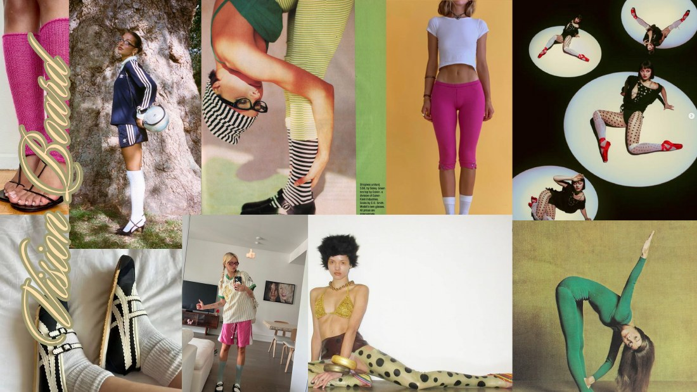
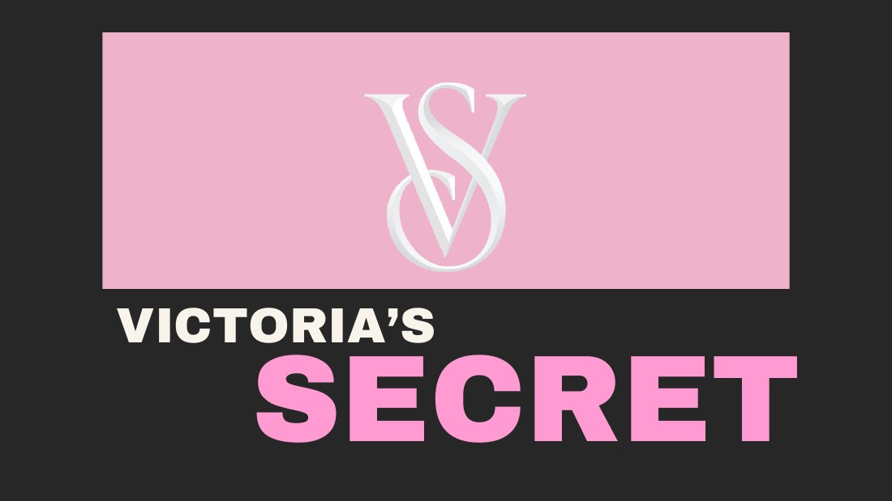
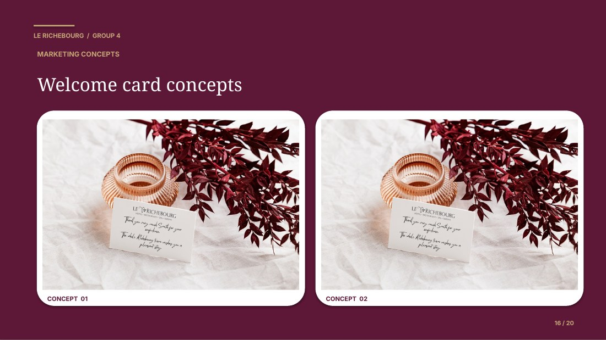
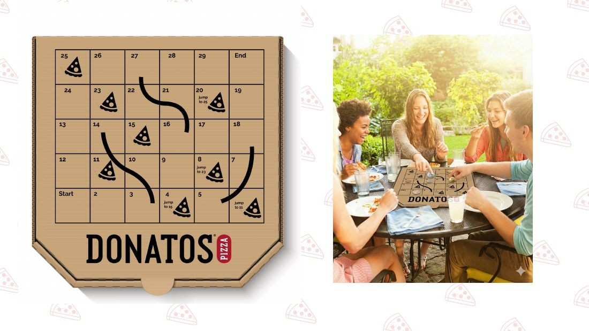
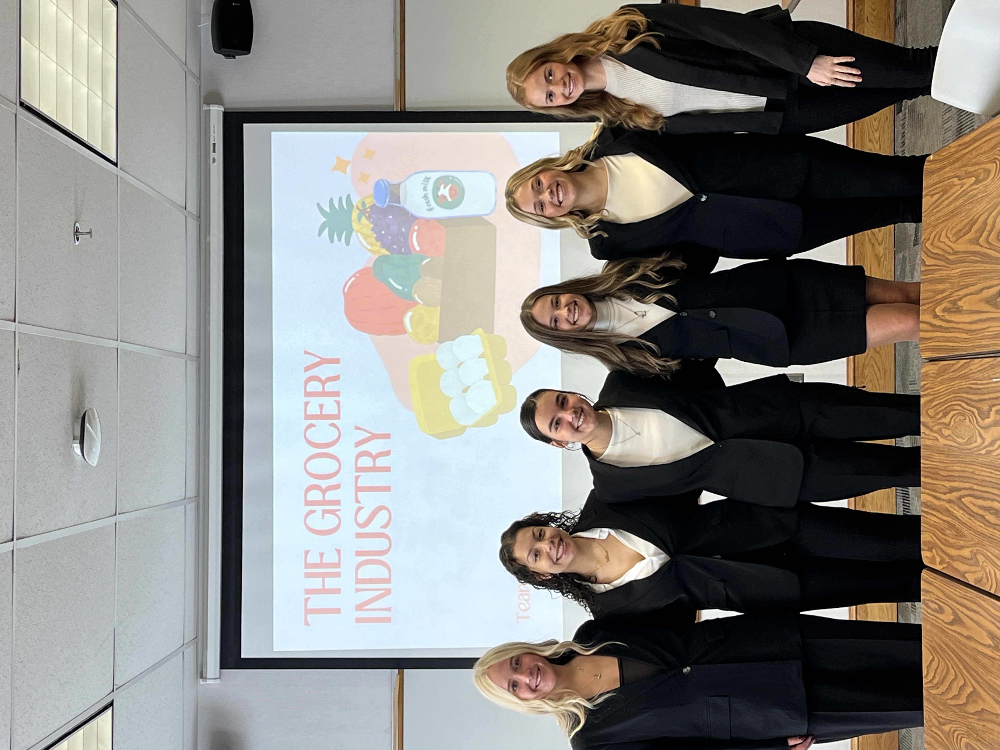
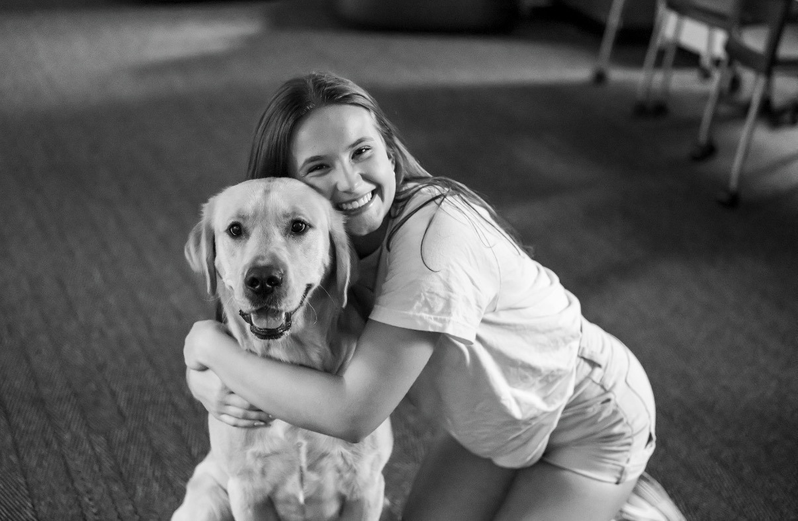

WELLNESS · AUG 2026–PRESENT
The Cello Experience
Leading a consulting team to explore audiences and strategic partnerships for a sound bath business. Outreach to 30+ university-affiliated contacts is helping inform growth recommendations.
MARKETING · STRATEGY · A LITTLE CURIOSITY
Open to Summer 2027 opportunitiesI’m Claire LaBudda, a marketing student who loves understanding people and turning that understanding into something useful.
I chose marketing because it asks you to understand what people need, what they respond to, and how to reach them in a way that actually sticks.
Take a look at my résuméI'm a senior at Ohio University studying Marketing and Strategic Leadership, and I've always been drawn to the side of business where creativity and strategy meet. I chose marketing because it asks you to understand what people need, what they respond to, and how to reach them in a way that actually sticks.
A lot of my time at Ohio University has been spent in consulting, which has taught me more than any classroom could on its own. I've had the chance to work with some really different businesses, including a local yoga studio, a career training company, and a luxury resort in Burgundy, France. Every project has pushed me to think differently and work better with the people around me. I'm still learning, but I've come to love the process of digging into a problem and building something useful out of it.
Outside of school, I've always felt most like myself around animals and in the outdoors. That love led me to 4Paws for Ability and the Climate & Sustainability Ambassadors, two organizations that let me show up for things I genuinely care about. On weekends you'll find me hiking, baking something with mixed results, or spending time with the people who mean the most to me.
The work I’m focused on now.
New questions, new audiences, and ideas taking shape.
WELLNESS · AUG 2026–PRESENT
Leading a consulting team to explore audiences and strategic partnerships for a sound bath business. Outreach to 30+ university-affiliated contacts is helping inform growth recommendations.
PERSONAL BRANDING · SEPT 2026–PRESENT
Helping clients show up with intention through profile optimization, personalized content strategies, posting schedules, and professional branding coaching.
A closer look at the thinking, the process,
and the finished presentations.

View slide deckRFM1010 | Intro to Retailing
From an idea to a brand with a point of view.
Over the semester, our team developed a retail concept for sustainable, alternative activewear, bringing together comfort, personal style, and a more thoughtful approach to materials. We shaped the target audience, value proposition, store environment, and promotional strategy to give the brand a cohesive identity.
The concept paired upcycled essentials with a thrift-inspired store experience, campus pop-ups, and social content designed for style-conscious, sustainability-minded young consumers.
 View slide deck
View slide deck OUCF Consulting
Making the next step clearer.
I led a consulting team in helping Tempo Business Training make its services easier to understand and explore. We researched competitors, restructured offerings into four clear business areas, and developed tiered packages with defined audiences, pricing, and learning outcomes.
Our recommendations moved into the client’s website through a refreshed service layout, clearer package descriptions, and “View Packages” calls to action, connecting the research to a more useful customer experience.

View slide deckMKT4440 | Consumer Behavior
What people buy into, beyond the product.
Our group explored how Victoria’s Secret and PINK connect products with identity, aspiration, and belonging. We examined their distinct brand personalities and the roles of self-concept, peers, influencers, and consumer culture in shaping how people relate to each brand.
The analysis connected classroom concepts to real brand touchpoints, including PINK’s college lifestyle positioning, emotion-led campaigns, and the ways inclusivity and social media can influence consumer attitudes.

View slide deckGlobal Consulting Program
Bringing the spa into the guest experience.
Working with American and European students in Burgundy, France, I helped develop recommendations for Le Richebourg’s hotel and spa. We combined market research, competitor benchmarking, and guest feedback to understand why hotel guests were not making greater use of spa treatments.
Our proposals addressed perceived value, time, and accessibility through pre-arrival offers, earlier spa access, and in-room treatments, supported by email, welcome-card, and brochure concepts.
 View slide deck
View slide deck OUCF Consulting
A more connected way to show up.
As team lead on a phased consulting engagement, I helped support marketing and operational planning for an Athens yoga and wellness center. The work brought the studio’s warm, community-focused identity into a more consistent set of communication materials.
The case study brings together educational social templates, weekly class schedules, Bobcat Open House promotions, and event-space collateral. It also outlines research priorities and recommendations for a more organized handoff and future evaluation.

View slide deckMKT4600 | Brand Management
A pizza night worth gathering around.
For a semester-long branding project with Donatos’ head of marketing, our team developed “Gather Around Donatos,” a proposed campaign centered on connection and shared experiences. We mapped audience segments, positioning, messaging, and media choices into one brand direction.
The concept turned the pizza box into an interactive game experience, with family, party, and sports-trivia versions. Social content, an email sequence, and a coordinated marketing calendar extended the idea beyond the box.

The research and the final slides tell part of the story. A photo from the process makes room for the people behind it.
Every experience adds a little perspective.
Select a milestone to explore the story.
Milestone
Sylvania Northview Highschool graduation
May 2023
Graduated from Sylvania Northview Highschool and began the journey toward a Business Administration degree at Ohio University, pursuing dual majors in Marketing and Strategic Leadership & Management.
Leadership
Joined 4Paws for Ability · Fundraising Chair
February 2024
Joined Ohio University's chapter of 4Paws for Ability as Fundraising Chair, immediately taking on a leadership role. Designed and executed at least two fundraisers per semester, raising over $1,500 to sponsor a litter of future service dogs.
Leadership
Joined OU Consulting Fellows
February 2024
Accepted into Ohio University Consulting Fellows, a student organization that partners with small businesses to solve real operational and marketing challenges. Began building hands-on consulting skills alongside a team of driven peers.
Project
Serenity Roots Yoga · consulting project begins
August 2024
Began a 3-phase consulting engagement with Serenity Roots Yoga & Wellness Center. Applied marketing and operations knowledge to support a local Athens business, eventually stepping up to Team Lead in December 2024 to manage deliverables across a team of four students.
Promotion
OUCF · Recruitment Chair
December 2024
Promoted to Recruitment Chair for Ohio University Consulting Fellows. Revamped the recruitment process by introducing structured information sessions, making it easier to attract strong candidates and better match consultants to client needs.
Major milestone
Global Consulting Program · Dijon, France
January–June 2025
Selected for a competitive global consulting program, completing a semester of preparatory work before traveling to Dijon, France. Collaborated with American and European students from the Burgundy School of Business to develop a marketing strategy for Le Richebourg, a luxury vineyard resort, aimed at growing spa revenue.
Leadership
Joined Climate & Sustainability Ambassadors
January 2025
Joined Ohio University's Climate & Sustainability Ambassadors, contributing to campus-wide efforts to raise awareness about sustainable practices, resource conservation, and environmental stewardship.
Promotion
OUCF · VP of Marketing
January 2025
Stepped into the VP of Marketing role for Ohio University Consulting Fellows. Took full ownership of the organization's social media presence across Instagram, LinkedIn, and Facebook, creating all content to grow engagement and strengthen the brand.
Promotion
4Paws · Events Coordinator
February 2025
Promoted to Events Coordinator for 4Paws for Ability, coordinating weekly schedules for over 20 volunteer trainers via Microsoft Teams. Ensured service dogs in training received consistent socialization to help them reach their potential.
Project
Tempo Business Training · Team Lead
January 2026
Led a six-person consulting team for Tempo Business Training. Spearheaded competitor analysis, designed career training packages with pricing and structure, and implemented recommendations directly into the company's live website.
Promotion
OUCF · VP of Operations
January 2026
Promoted to VP of Operations for Ohio University Consulting Fellows, the highest student leadership role in the organization. Responsible for overseeing day-to-day operations, managing client engagements, and developing the next generation of consultants.
Promotion
4Paws · President
February 2026
Elected President of the Ohio University chapter of 4Paws for Ability, the culmination of three years of growth within the organization. Now leads the full chapter, overseeing fundraising, volunteer coordination, and advocacy for veterans and children with disabilities.
Consulting
The Cello Experience · Team Lead
August 2026–Present
Lead a student consulting team researching target markets, evaluating customer segments, and identifying strategic partnership opportunities for a wellness business. Directed outreach to more than 30 university-affiliated contacts to assess demand for sound bath experiences and develop recommendations for future business growth.
Freelance
Freelance LinkedIn Brand Strategist
September 2026–Present
Manage LinkedIn accounts, optimizing profiles, growing networks, and tailoring content to career goals. Develop personalized content strategies and posting schedules while coaching students on professional branding.
Now
Senior, Ohio University
2026
Currently a senior in the Copeland Scholars Honors Program, holding VP and President roles across two organizations while pursuing dual majors in Marketing and Strategic Leadership. Expected graduation May 2027.
A growing collection of things I’ve learned along the way. 2023 TO NOW
The causes, communities, and small things
that make me feel most like myself.
4Paws for Ability · Chapter President
4Paws for Ability is a nonprofit that places trained service dogs with veterans and children with disabilities, two groups I care about deeply. I joined Ohio University's chapter as a Fundraising Chair my freshman year and have grown with the organization ever since, through Events Coordinator and now President. Over three years I've raised over $1,500 through fundraising events and coordinated weekly training schedules for more than 20 volunteers.
But the part of this work that means the most to me is the dogs themselves. I fostered and trained one of them from the time he was three months old until he turned one. I brought him into my home, worked with him daily on basic obedience and socialization, and took him out into public spaces so he could learn to navigate the world. Watching him go from a puppy to a confident, capable dog ready for the next stage of his training is something I'll carry with me for a long time. He's on his way to becoming a fully placed service dog now, and I had a hand in that.
I've worked with many dogs throughout my time with 4Paws, but that experience made it personal in a different way. The veterans and children who receive these dogs often have their daily lives transformed by them. That's personal to me. It's the reason I show up.

Climate & Sustainability Ambassadors · Jan 2025–May 2026
My love of the outdoors and the natural world extends to how I think about the environment more broadly. As a Climate & Sustainability Ambassador at Ohio University, I contribute to campus efforts to raise awareness about sustainable practices, resource conservation, and environmental stewardship.
It's an extension of the same values that bring me to 4Paws, a belief that the world around us, the animals in it and the ecosystems that support them, is worth protecting and showing up for.
Hiking trails. Dogs.
Baking, with mixed results.
HAVE AN OPPORTUNITY, AN IDEA, OR A GOOD QUESTION?
I’m looking for full time opportunities where I can bring curiosity, thoughtful strategy, and a willingness to get stuck in. If that sounds like a fit, I’d love to hear from you.
Say hello Find me on LinkedIn